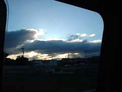
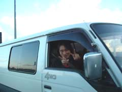
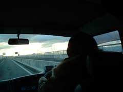
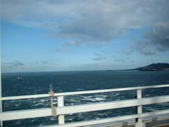
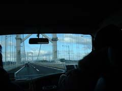
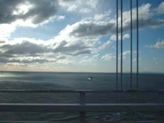

| ●PICTURES● | ||
 |
 |
 |
| 帰路も徳島港からフェリーです。 昨夜、いや今朝まで深酒したのに、わずか一時間程度の睡眠で、早い！出発です。 |
今回の旅の仕掛け人ＦREE WILLドラムのブチ君。HIZUMI命名コモタン。 高松のインターチェンジまで送ってくれました。 |
不安げなGEORGE. 「どこで降りるんすか？高速」 |
 |
 |
 |
| 折角コモタンに送ってもらって時間短縮出来たのに、行過ぎました。 | 橋を渡れば淡路島。 | 鳴門のうずしお見物が出来ました。 |
| 有明到着午前5時。 最寄駅でGEORGE、お疲れ。 |
今回はちゃんとしたカバン持参HAYA。 船で飲食しょうと買い込んだ多量の食材を忘れて行きました。 |